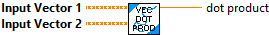
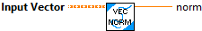

Calculate the dot product of two vectors
Inputs:
-- InputVector 1 -- Input vector 1
-- InputVector 2 -- Input vector 2. This vector must have at least as many rows as vector 1.
Outputs:
-- Dot Product -- Calculated vector dot product.

Calculate the norm of the vector ( square root of the sum of the squares of all values).
Inputs:
-- InputVector -- Input vector
Outputs:
-- Norm -- Calculated norm